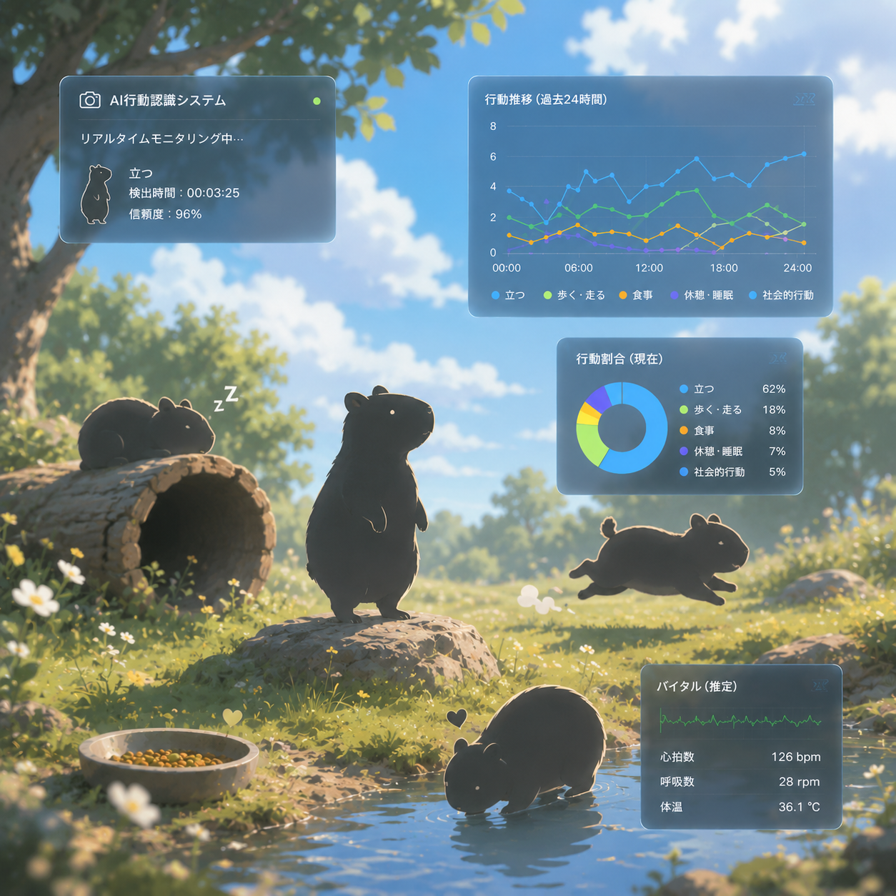

CAREER PATH
学歴・職歴の歩み
会計学を学ぶ
台湾 中原大学 商学部会計学科にて、会計・財務・経営の基礎を学びました。
マーケティングを深める
国立中興大学大学院にて、市場分析、消費者行動、データ分析を学びました。
運営PMとして勤務
ライブ配信業界で、イベント企画、進行管理、データ分析、部門間調整を担当しました。
情報処理を学ぶ
神戸電子専門学校 情報処理学科にて、Python、Web開発、データ分析を学習中です。
SEを目指す
業務理解力とITスキルを活かし、業務システム開発・DX推進に貢献できるSEを目指します。
STRENGTHS
私の強み
01
業務理解力
会計・マーケティング・PM経験を活かし、 業務課題を整理したうえでシステム設計を考えることができます。
02
データ分析力
PandasやNumPyを用いてデータを整理し、 KPI、ランキング、傾向分析として可視化できます。
03
開発力
Flaskを中心に、AI API、Dashboard、Report生成など、 業務支援を想定したWebアプリを開発しています。
TECH STACK
使用技術
Backend
Python Flask REST APIFrontend
HTML CSS JavaScriptData
Pandas NumPy Chart.jsAI
TensorFlow Keras OpenAI API LLM / Prompt EngineeringAutomation
Excel PDF OpenPyXL ReportLabDeploy
Git GitHub RenderFEATURED PROJECT
動物行動ログ分析・可視化システム
AI Demoではなく、業務システムとして設計

AI × Dashboard × Analytics
画像認識AIを活用してカピバラの行動を分類し、行動ログの記録、 ダッシュボードによる可視化、異常傾向の分析、 AI観察レポート生成までを行うWebシステムです。
制作背景
飼育現場では、動物の行動を継続的に記録し、 異常の兆候を早期に把握することが重要です。 本システムでは画像認識とログ管理を組み合わせ、 観察業務を支援する仕組みを想定しました。
工夫した点
AI判定結果を単なる表示で終わらせず、CSVログ、Dashboard、 異常分析、AIレポートまでつなげることで、 業務システムとして説明できる構成にしました。
SYSTEM ARCHITECTURE
システム構成
KOBE TOURISM DX SERIES
神戸観光DXシリーズ
神戸という地域を題材に、観光案内、データ可視化、 レポート自動生成までを段階的に発展させたDX企画シリーズです。
Project 01
神戸観光AIサポート
AI Chat System
観光客向けFAQをAIで自動応答
制作背景
観光客が神戸の観光地について気軽に質問できるように、 AIチャット形式の観光サポートアプリを制作しました。
使用技術
Flask / OpenAI API / HTML / CSS / JavaScript
工夫した点
FAQだけでなく、OpenAI APIを利用して自然な回答を生成できるようにしました。 フロントエンドとバックエンドを分け、API連携の流れを理解できる構成にしました。
Project 02
神戸観光ダッシュボード
Data Visualization Dashboard
地域別・カテゴリ別の傾向を可視化
制作背景
観光スポットの評価やレビュー数を整理し、 地域別・カテゴリ別に分析できるダッシュボードを制作しました。
使用技術
Flask / Pandas / NumPy / Chart.js / REST API
工夫した点
人気指数を定義し、単なるレビュー数ではなく、 評価とレビュー数を組み合わせて観光スポットを比較できるようにしました。
Project 03
神戸観光レポート自動生成ツール
Report Automation Tool
Excel・PDFレポート作成を自動化
制作背景
手作業で作成していた観光分析レポートを、 Pythonで自動生成する業務効率化ツールとして制作しました。
使用技術
Python / Pandas / OpenPyXL / ReportLab / PDF
工夫した点
ExcelとPDFの両方に対応し、 KPI、地域別分析、カテゴリ別分析、ランキングを出力できるようにしました。
LEARNING ROADMAP
今後の学習計画
Python / Flask / Dashboard
Webアプリ、REST API、データ可視化を中心に学習中です。
基本情報技術者試験
IT基礎、アルゴリズム、ネットワーク、DBの理解を深めます。
ERP / 業務システム
会計知識を活かし、業務システム開発やERP導入支援に挑戦します。
QUALIFICATIONS
資格・認定
CONTACT